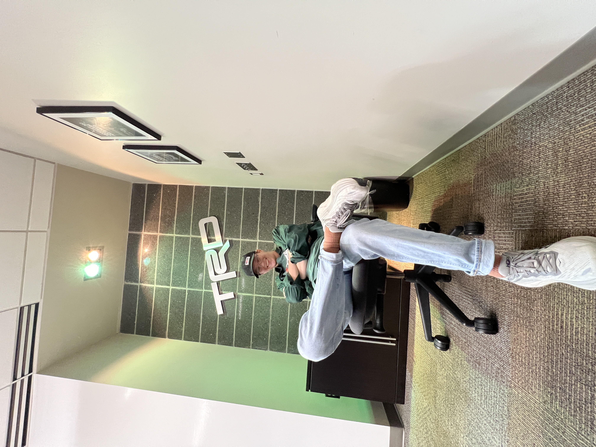

I understand that what I put here is publicly available on the web and I won't put anything here I don't want the public to see - Franco Antunez 08/27/2024
Franco Antunez || Funky Ant
Me at work
Personal Background: I grew up here in charlotte and decided to come to UNCC because of the NASCAR and Racing connections. I love all forms of motorsports. When I graduate I hope to be working in industry making tools, tire data processing, and working in vehicle development and simulation.
Professional Background: Over the summer and into september I interned at Toyota Racing Development (TRD) in the Vehicle Development and Tires Group. I worked on tools for NASCAR and IMSA. I'm hoping to get an offer in November for a coop and go full time when I graduate in May.
Academic Background: I am a Data Science Major and minoring in Software Engineering, I'm a Senior this year.
Background in this Subject: I have mostly been a backend developer with my work at TRD but have full stack experience, I'm not extremely familiar with js, html, or css but i have worked with it before.
Primary Computer Platform: Mac OS and windows
Courses I'm Taking and Why:
ITIS 3135: Web-based Application Design and Development: Requirement for my minor.
DTSC 3601: Predictive Analytics: Requirement for the major.
ITSC 3155: Software Engineering: Requirement for my minor.
Contract